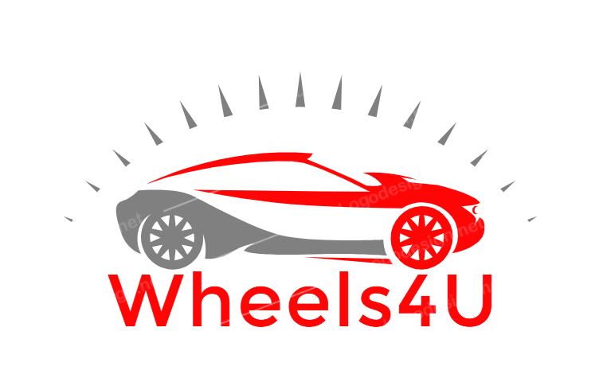
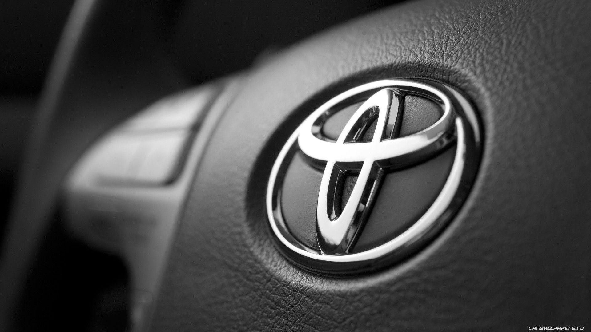

Toyota Kirloskar

Toyota Kirloskar Motor, the Indian subsidiary of the Japanese carmaker giant. Toyota has been officially present in the country since the late 90s, when it initiated its Indian innings with the launch of the Qualis. Since there, there has been no looking back for the carmaker. Currently, the auto manufacturer has been laughing to the bank with a great response to models like the Innova Crysta and Fortuner. Also, its models like Etios Live and Etios have been able to find a fan following among a select group of private car buyers and fleet operators.
Toyota Kirloskar Motor has been the winner of JD Power Quality Survey for several years in a row and has been quite famous for offering the best after-sales service experience in the country. In future, it will consolidate its partnership with Maruti Suzuki India Ltd and launch more jointly developed models like the Glanza. Also, it will work in close ties with MSIL, Toshiba and Denso for the development of hybrid and electric vehicles tailor-made to suit the Indian conditions. In all likelihood, Toyota, together with Maruti Suzuki, will emerge out as a far stronger player in the coming years.
Cars are divided based on their bodytype.
- HatchBack
- Sedan
- Suv
Home page
Previous Page